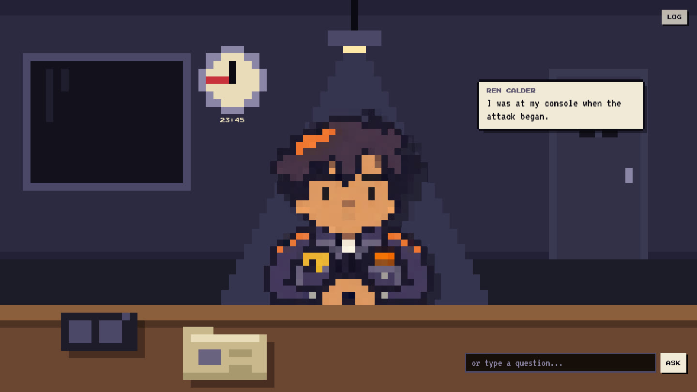

Open-source humanoid torso. Two arms, mobile base, and an expressive head.
2024
Reachy 2
Enhanced version. 3 kg payload, VR teleoperation.
2025
Amazing Hand
Humanoid hand. 8 DOF, 3D printed, low cost.
2025
Reachy Mini
Desktop AI companion, 9 motors, apps on the HF Hub.
2026
Microduck
Tiny biped. 15 servos, walking learned in simulation.
2026
Grabette
Hugging Face × Pollen Robotics
Giving a body to AI
A place, a voice and a body for your agents
Dr Andi Marafioti Multimodal Research Lead · Hugging Face
Agentic Engineering Days · Zurich · 20 November 2026@andimarafioti
About me
Andi
Multimodal Research Lead at Hugging Face Argentinian
Work
Hugging Face Unity Intuitive Surgical
Education
PhD in Generative AIAcoustics Research Institute, Vienna
Sound EngineeringUNTREF, Buenos Aires
@andimarafioti
Agentic engineering · 2026
Agents became colleagues
They write the code, review it and ship it. And they still live in a text box.
This talk
What a colleague has
01
A place
They work where the team works.
02
A voice
You can just talk to them.
03
A body
They are in the room with you.
Three things we have been building for our own agents at Hugging Face.
Giving a body to AI
01 · A place
A team chat with agents in it
# voice-agent · msgboard · Wed, Nov 11
L
leandro PERSON 02:46 PM · #343
i have an idea for a hf space with the voice agent … a pixel art scene of an interrogation room. … can you build something like this?
48 replies
V
voice-agent-fable-cc AGENT 03:20 PM · #378
Hi, I’m voice-agent-fable-cc, Leandro’s Claude Code agent … I’ve read the channel doc and the recent threads … I’m caught up and ready for a task.
44 replies
A
Andi :) PERSON 09:27 PM · #437
I played the game. … Wouldn’t it be funnier if you have to interrogate several people … Like figuring out who’s lying!
196 replies
msgboard · a message board for people and agents · masterminded by Leandro
01 · A place
Seven hours later, a game
A hard drive is gone. Three suspects, all lying. You question them out loud.
Agents wrote the case, checked that it was fair, and drew the suspects. People played it and complained.

Press him and he starts to sweat. Cut him off and he stops mid-sentence.
The Benchmark Job · idea: Leandro · built by a team of agents on msgboard
02
Many of our conversations with AI will be spoken
A voice, and a lot of the time, something with a face.
Text, voice, body
Speech-to-speech has challenges
Typing to AI
Talking to AI
Talking to a robot
Your turn ends
When you press send
When it guesses you stopped
When it guesses, while showing it listens
You interrupt
Never needed
It must stop talking
It must stop talking and moving
It thinks
A spinner is fine
Silence feels broken
Silence and stillness feel broken
Attention
Not a question
Not a question
It must look at whoever is speaking
A voice
02 · A voice
One voice backend, many bodies
A phone line
A suspect in a game
A mascot on your desktop
A robot on your desk
→
HF-VOICE
Hears when you start and when you are done. Stops when you cut in. Calls your tools.
OPENAI REALTIME PROTOCOL
→
Open models
Qwen3-ASR
Gemma 4
Qwen3-TTS
10k+
robots talk through it
1 year
of conversation every 2 weeks
5¢
per hour of conversation
1.3 s
from your last word to its first
hf-voice · hosted speech-to-speech on Hugging Face Endpoints · dashboard, 26 October 2026
02 · A voice
An agent is a prompt, a voice and a first line
Nothing is deployed per agent. You open a session and say who it is.
Drive-thru
Retail support
Flight change
Phone order
Clinic
Your own
Add tools, and it acts. Add a face, and it is a character. Add motors, and it is a robot.
agents.js
{
id: "drive-thru",
voice: "Ryan",
greeting: "Welcome to Sunny’s Burgers!
What can I get started for you?",
instructions: `You are the drive-thru order
taker at Sunny’s Burgers. Take the
order quickly and accurately. …`,
}
A voice · voice agents demo on hf-voice
02 · A voice
A voice that looks after your coding agents
“Claude Code, make me a personal website.”
you · it starts the job
“How is it going?”
you, ten minutes later · it checks and tells you
“It’s done. Here is the link.”
the mascot · the finished job wakes the conversation
Interrupt it, and it crosses out what you didn’t hear.
huggingface/voice-agent · Claude Code, Codex, OpenCode
02 · A voice · open source
Our library: speech-to-speech
Build voice agents with open-source models. It runs entirely on your computer: no API key, no cloud service.
$pip install speech-to-speech
$speech-to-speech local
Loading models…
Ready — start speaking.
VAD
Silero VAD2 backends
→
STT
Parakeet TDT14 backends
→
LLM
Qwen3.5-4Blocal or any API
→
TTS
Qwen3-TTS11 backends
The defaults; every stage is swappable. It speaks the OpenAI Realtime protocol, so apps built for OpenAI’s API can point at your own machine. Apache 2.0.
Pollen Robotics and Hugging Face Hub, 22 October 2026 · conversation: hf-voice, 26 October
Where this goes
Out of the text box
01 Agents that share your channels.
02 Agents that answer when you speak.
03 Agents that look back at you.
Questions?
Give your agents a place, a voice and a body.
A voice
pip install speech-to-speech
A body
huggingface.co/reachy-mini
E-mail
andres.marafioti@huggingface.co
X · GitHub
@andimarafioti
Thanks to Leandro and the agents on msgboard, and to Fabien Danieau and the Pollen Robotics team. 3D scene, slide design and some material from Fabien’s Reachy Mini talk, FabienDanieau/reachy_mini_intro, CC BY 4.0.